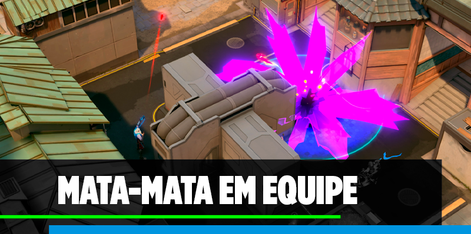

MATA-MATA EM EQUIPE

O modo Mata-Mata é uma modalidade de jogo voltada para o combate em equipe, onde dois times de cinco jogadores se enfrentam em rodadas rápidas e intensas. O objetivo é alcançar o número de eliminações necessárias antes do time adversário, em partidas que duram cerca de nove minutos. Diferente do Frenético, aqui as habilidades dos agentes estão ativas, permitindo combinações estratégicas e sinergias entre os personagens. O modo proporciona uma forma divertida e menos punitiva de praticar coordenação, controle de espaço e domínio das habilidades, mantendo o ritmo acelerado e a adrenalina das partidas tradicionais.
Mesmo sem o peso de um modo competitivo, o Mata-Mata incentiva cooperação e comunicação entre os jogadores. Cada rodada demanda coordenação de habilidades e posicionamento, permitindo que os times testem táticas em um ambiente mais leve e focado em ação contínua.
As partidas do Mata-Mata são marcadas pelo ritmo rápido e pela variedade de situações de combate. Os jogadores podem trocar de armas, ajustar suas estratégias e reviver rapidamente após a eliminação, mantendo o fluxo constante de jogo. É o modo ideal para quem busca ação direta e prática com agentes em um cenário de confronto realista, mas sem a pressão das partidas ranqueadas.